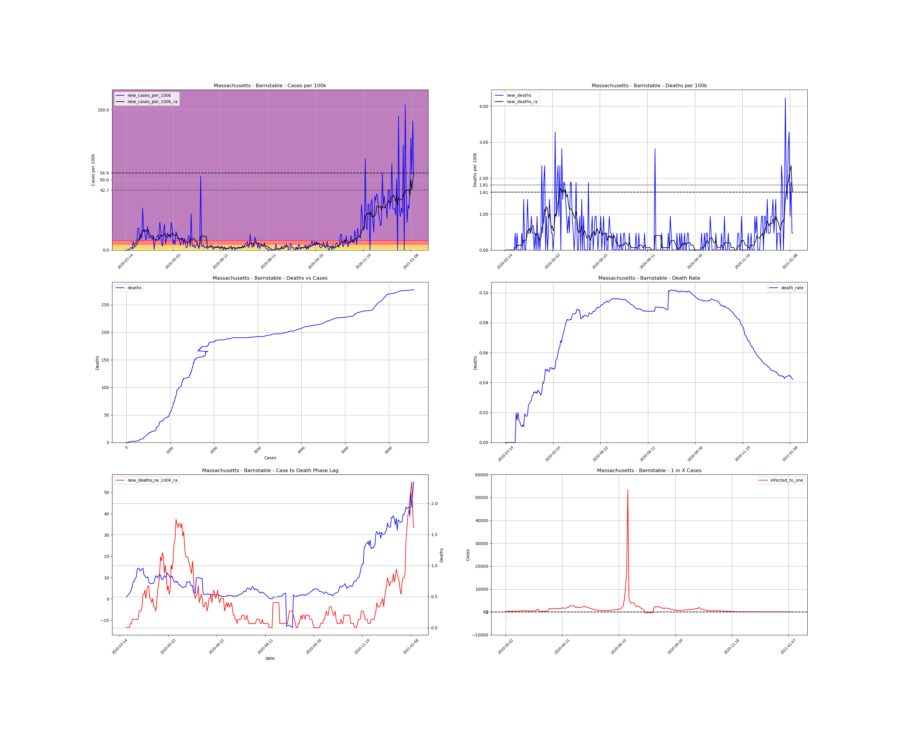
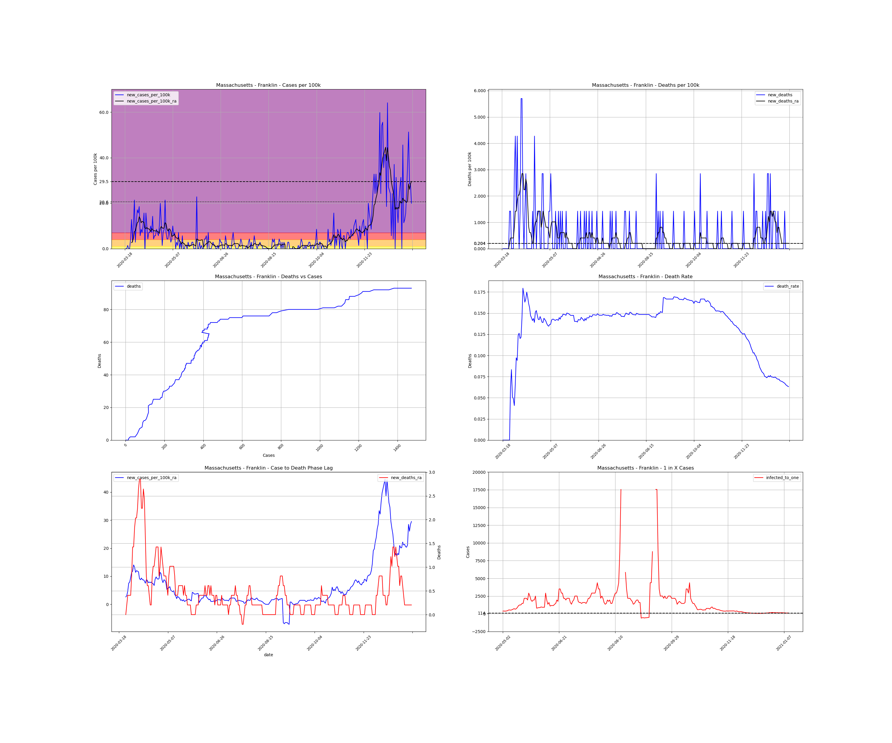
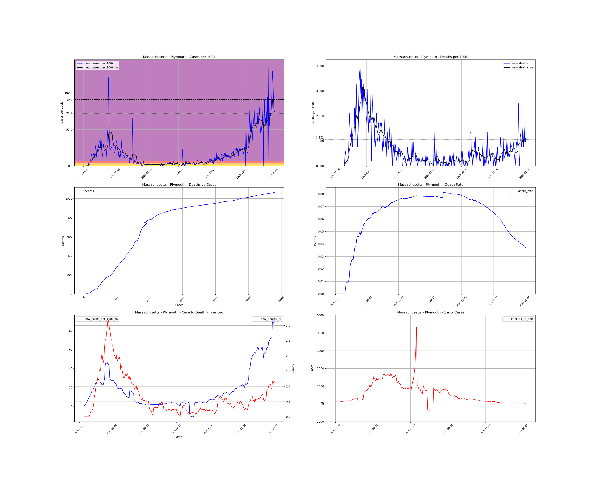

<h1>Massachusetts Counties</h1><table><tr><td><a #Barnstable>Barnstable</a></td></tr><tr><td><a #Berkshire>Berkshire</a></td></tr><tr><td><a #Bristol>Bristol</a></td></tr><tr><td><a #Dukes>Dukes</a></td></tr><tr><td><a #Essex>Essex</a></td></tr><tr><td><a #Franklin>Franklin</a></td></tr><tr><td><a #Hampden>Hampden</a></td></tr><tr><td><a #Hampshire>Hampshire</a></td></tr><tr><td><a #Middlesex>Middlesex</a></td></tr><tr><td><a #Nantucket>Nantucket</a></td></tr><tr><td><a #Norfolk>Norfolk</a></td></tr><tr><td><a #Plymouth>Plymouth</a></td></tr><tr><td><a #Suffolk>Suffolk</a></td></tr><tr><td><a #Worcester>Worcester</a></td></tr></table>